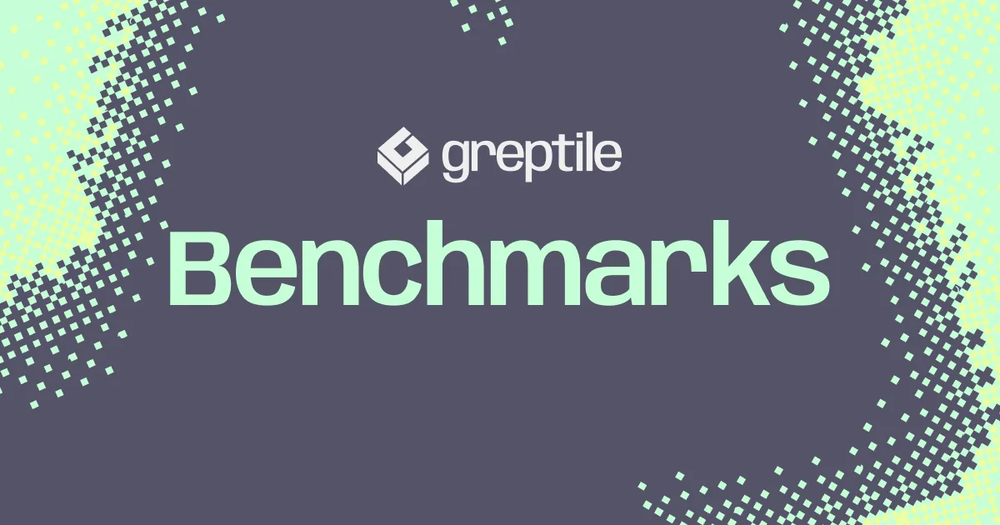
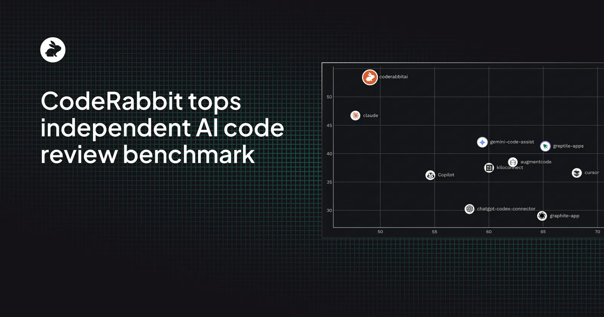
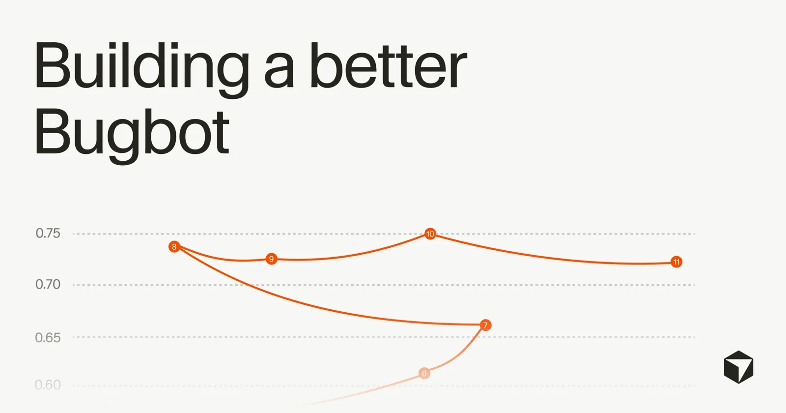

AI Code Review · Benchmarks & Evaluation · 2026
Evaluation Rubrics and Benchmarks for AI Code Review
50 citations · expedition · vendor claims vs. independent F1 scores
INDEPENDENT BEST: F1 19.4%
VENDOR CEILING: 82% (self-reported)
4× GAP — same tools, different referees
⚠ 0 of 5 vendor benchmarks independently reproduced
AIDev (3,109 PRs): 12 of 13 agents <60% signal
Ground truth ~36% noise in CodeReviewer labels
Greptile self: 82% | Propel's board: 45% → same tool, −37pp
⬤ Independent Research
19%
4×
↕
⬤ Vendor Self-Reported
82%
82% catch rate — Greptile's own benchmark[11]
50 bug-fix PRs · dataset designed by winning team
Built, run, and evaluated by Greptile
Others: Qodo 60.1%, Propel 64%, Bito 69.5%,
CodeRabbit 51.2% F1, CodeAnt 51.7% F1
All built their own dataset · all ranked #1
50 bug-fix PRs · dataset designed by winning team
Built, run, and evaluated by Greptile
Others: Qodo 60.1%, Propel 64%, Bito 69.5%,
CodeRabbit 51.2% F1, CodeAnt 51.7% F1
All built their own dataset · all ranked #1

Greptile's published benchmark — they designed the dataset and ranked #1 [11]
01
All Benchmarks Side by Side
| Tool / Study | Score | Metric & Definition | Dataset Size | Who Built It | Cross-Vendor Reality Check |
|---|---|---|---|---|---|
| Vendor Self-Reports — every vendor designed their own dataset and ranked #1 | |||||
|
|
82% | Catch rate bug flagged in line-level comment with impact explained | 50 PRs · 5 langs · 5 repos | Greptile [11] | 82% self vs 45% on Propel's board −37pp[21] |
|
|
69.5% | Coverage % of known truth-set issues detected | 65 known issues · 5 langs | Bito [17] | Not independently tested |
|
|
64% | F-score proprietary dataset and harness | proprietary | Propel [21] | Not independently tested |
|
|
60.1% | F1 · recall 56.7% LLM-injected bugs, LLM-judged hits | 100 PRs · 580 issues · 7 repos | Qodo [15] | Not independently tested |
|
|
70%+ | Resolution rate (→52% at launch) AI confirms author fixed flag before merge | BugBench · human-annotated real diffs | Cursor [14] | 70%+ self vs 49% F-score on Propel's board −21pp[21] |
|
|
51.2% | F1 (#1 of 10) · recall 53.5% online: dev acts on comment = TP | ~300k PRs · Martian Bench | Martian (promoted by CodeRabbit) [12] | Dataset & harness vendor-controlled; online signal gameable[13] |
|
|
51.7% | F1 (#3 of 17) online + 50-PR offline gold set | 200k+ PRs · Martian Bench | Martian (promoted by CodeAnt) [13] | Same harness issues as CodeRabbit above |
| Independent Peer-Reviewed Studies — external dataset, not built by the evaluated vendors | |||||
|
|
19.4% | F1 (best: PR-Review + Gemini-2.5-Pro) range across all tested: 4.87–19.38% | 1,000 PRs · 12 OSS Python repos | Academic researchers [2] | ~90% LLM-human judge agreement · multi-review +43.67% F1[1] |
|
|
<60% | Signal ratio (12 of 13 agents) Copilot worst: 19.79% signal | 3,109 real PRs | Academic researchers [9] | CRA-only merge rate: 45% vs 68% human-only review |
|
|
0.54 | Spearman correlation with humans conciseness · comprehensiveness · relevance | 2,900 human-scored reviews | NAACL 2025 [4] | BLEU fails: valid model review scores as low as 0.046[4] |

CodeRabbit promoting the Martian benchmark where it ranked #1 — Martian's dataset and harness remain vendor-controlled [12]

Cursor BugBot — reports 70%+ resolution rate on its own BugBench; scores 49% on Propel's independent board [14]
The contamination problem in one number: Models score 80%+ on SWE-bench Verified, then drop to 46–57% on the contamination-resistant SWE-bench Pro — because public PRs leak into training data.[38] Models identify the buggy file from issue text alone up to 76% of the time without repo access.[42] 32.67% of o3 "successes" involved solution text that leaked from the issue description.[43] Every code-review benchmark built on public PRs inherits this risk.
02
Why the Numbers Don't Reconcile — 4 Methodology Fouls
🚩
🚩
Four incompatible metric definitions
🚩
Benchmark contamination
🚩
Near-zero reproducibility
03
Metric Hierarchy — What to Measure on Your Team
1
Acceptance / Resolved Rate
Trusted
2
Precision / Signal-to-Noise Ratio
What fraction of flags are worth reading? At 15% FPR, ~13 of 15 "critical" weekly flags are wrong — engineers learn to dismiss the channel.[25] 46% of developers already distrust AI accuracy; 66% cite "almost right but not quite" as their top frustration.[23] Typical FPR 5–15%; well-tuned tools 5–8%.[22]
Contextual
3
F1 / Recall (headline numbers)
What most vendor benchmarks report. Recall failures are invisible — a missed bug looks like a clean PR. High recall with excess output causes developer fatigue and tool abandonment.[45] Recall-led vendors (Qodo, CodeRabbit) advertise finding more; precision-led vendors (Korbit[19], the deprecated Graphite Diamond[18]) advertise fewer false flags. Treat any external F1 as a prior, not a result.
Marketing
04
What a Credible Evaluation Actually Looks Like
- ✓
-
✓
A shared, versioned, re-runnable harness. The opposite of the self-run vendor norm. Of 85 ICSE/ASE 2024 LLM papers: 18 shared artifacts, 5 executable, 0 fully reproduced.[44]
-
✓
Blind human adjudication with reported inter-rater agreement. CRScore-style dimensions (conciseness · comprehensiveness · relevance)[3], Krippendorff's α (handles missing data, any number of raters, ordinal/nominal/interval[50]). Best-Worst Scaling reaches equivalent reliability with ~30% of labeling effort vs Likert (ρ=0.98 vs 0.95, p<.001).[48] High IAA confirms consistency, not construct validity.[50]
- ✓
-
✓
Evaluated on your own recent repos. The only benchmark that fully transfers is your last 50 merged PRs, with you adjudicating whether each AI comment would have helped. Every external number is a prior, not a result. Nearly every SE benchmark has at least one construct-validity weakness — the score doesn't support the claim made about real capability.[47]
05
Established Rubrics — Use These Today
conciseness · comprehensiveness · relevance
Reference-free. Grounds evaluation in detected code claims and smells. Krippendorff α 0.85–0.89. Spearman 0.54 with humans. NAACL 2025. Exposes BLEU failure: valid review can score 0.046.
useful ↔ triggers nearby code change
Behavioral, binary. 1.5M comments at Microsoft; ~⅓ non-useful. Gold standard for acceptance-rate tracking. Directly usable as your in-house evaluation signal.
Code · Text · Voice · Jargon features
Predicts usefulness via classifier (F1/AUC/MCC). >1 in 3 comments lack utility. Extends the Microsoft definition with feature decomposition for model training.
correctness · completeness · relevance